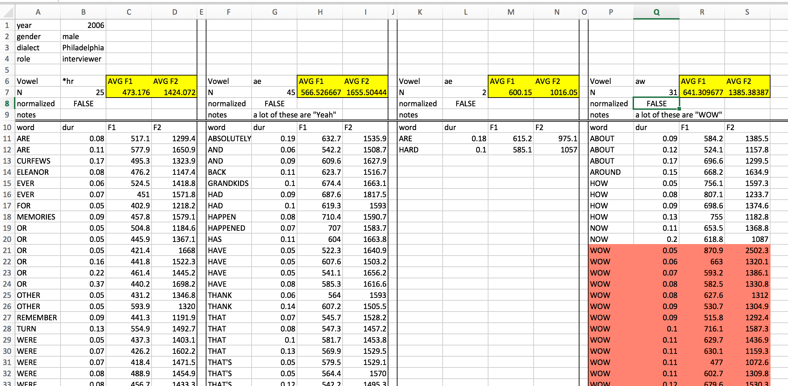
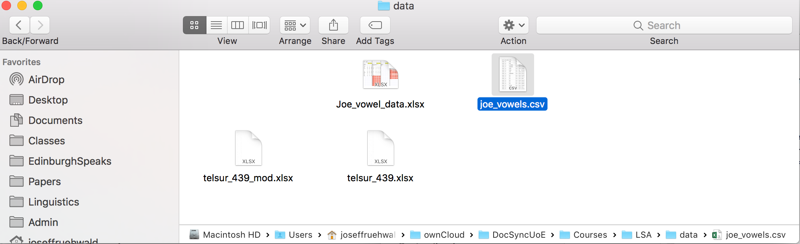
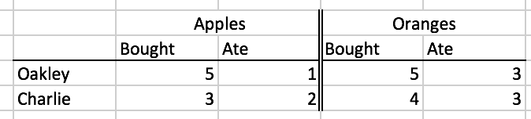

r
library(lsa2017)Error in library(lsa2017): there is no package called 'lsa2017'r
library(tidyverse)Error in library(tidyverse): there is no package called 'tidyverse'Josef Fruehwald
July 2017
December 2023
Make sure that your current RStudio project is set to your course project. Create and save your R notebook for today (I would recommend 02_lecture.Rmd). Clear the workspace of anything left over from last time with the menu options Session > Clear Workspace.
Load the important packages for today’s work:
When collecting data in the first place, over-collect if at all possible or ethical. The world is a very complex place, so there is no way you could cram it all into a bottle, but give it your best shot! If during the course of your data analysis, you find that it would have been really useful to have data on, say, duration, as well as formant frequencies, it becomes costly to recollect that data, especially if you haven’t laid the proper trail for yourself. On the other hand, automation of acoustic analysis or data processing can cut down on this costliness.
This doesn’t go for personal information on human subjects, though. It’s important from an ethics standpoint to ask for everything you’ll need, but not more. You don’t want to collect an enormous demographic profile on your participants if you won’t wind up using it, especially if you know you won’t use it to begin with.
If, for instance, you’re collecting data on the effect of voicing on preceding vowel duration, preserve high dimensional data coding, like Lexical Item, or the transcription of the following segment. These high dimensional codings probably won’t be too useful for your immediate analysis, but they will allow you to procedurally extract additional features from them at a later time. For example, if you have a column called fol_seg, which is just a transcription of the following segment, it is easy create a new column called manner with code that looks like this:
r
iy_ah <- iy_ah %>%
mutate(
manner = recode(
fol_seg,
B = 'stop',
CH = 'affricate',
D = 'stop',
DH = 'fricative',
`F` = 'fricative',
G = 'stop',
HH = 'fricative',
JH = 'affricate',
K = 'stop',
L = 'liquid',
M = 'nasal',
N = 'nasal',
NG = 'nasal',
P = 'stop',
R = 'liquid',
S = 'fricative',
SH = 'fricative',
SP = 'pause',
`T` = 'stop',
TH = 'fricative',
V = 'fricative',
W = 'glide',
Y = 'glide',
Z = 'fricative',
ZH = 'fricative',
.default = 'vowel'
)
)Error in iy_ah %>% mutate(manner = recode(fol_seg, B = "stop", CH = "affricate", : could not find function "%>%"r
Error in eval(expr, envir, enclos): object 'iy_ah' not foundBe sure to answer this question: How can I preserve a record of this observation in such a way that I can quickly return to it and gather more data on it if necessary? If you fail to successfully answer this question, then you’ll be lost in the woods if you ever want to restudy, and the only way home is to replicate the study from scratch.
Give meaningful names to both the names of predictor columns, as well as to labels of nominal observations. Keeping a readme describing the data is still a good idea, but at least now the data is approachable at first glance.
0 and NAI have worked with some spreadsheets where missing data was given a value of 0, which will mess things up. For example, /oy/ is a fairly rarely occurring phoneme in English, and it’s possible that a speaker won’t produce any tokens in a short interview. In a spreadsheet of mean F1 and F2 for all vowels, that speaker should get an NA for /oy/, not 0.
When we store data, it should be:
Raw data is the most useful data. It’s impossible to move down to smaller granularity from a coarser, summarized granularity. Summary tables etc. are nice for publishing in a paper document, but raw data is what we need for asking novel research questions with old data.
Do not use proprietary database software for long term storage of your data. I have enough heard stories about interesting data sets that are no longer accessible for research either because the software they are stored in is defunct, or current versions are not backwards compatible. At that point, your data is property of Microsoft, or whoever. Store your data as raw text, delimited in some way (I prefer tabs).
I think this is most important when you may have data in many separate files. Each file and its headers should be consistently named and formatted. They should be consistently delimited and commented also. There is nothing worse than inconsistent headers and erratic comments, labels, headers or NA characters in a corpus. (Automation also helps here.)
Produce a readme describing the data, how it was collected and processed, and describe every variable and its possible values.
Let’s start off by looking at a picture of a data organization approach that might look familiar, and is a very bad way to do things:

This spreadsheet has a fairly strict organizational structure, but is virtuously hopeless for doing any kind of serious statistical analysis. It’s also verging on irreparable using R. This because the data in this spreadsheet is organized to be easy to look at with your eyeballs 👀.
But looking at neatly organized data in a spreadsheet is not a statistical analysis technique. So we need to start organizing our data in a way that isn’t easy to look at, but is easy to graph and analyze.
Everyone working with data (in R or otherwise) should read Hadley Wickham’s paper on Tidy Data: https://cran.r-project.org/web/packages/tidyr/vignettes/tidy-data.html If you are coming off of organizing your data like the picture above, there are a few guidelines not discussed in that paper, namely:
In the semantics of data structure Wickham lays out, there are three important primitives:
Variables are the collections of values of interest in data analysis. For example, let’s say you were doing a study on unnormalized vowel space size by just looking at /i:/ and /ɑ/. The variables in that study could be:
speakerwordphonemedurationF1F2word_frequencyValues are, as the name implies, the possible values that each variable can have, for example:
speaker: "Oakley", "Charlie", "Azaria", ...word: "street", "thirteen", "not", "got", ...phoneme: "iy", "ah"An observation is the minimal unit across which all variables are collected. For example, in the vowel space study, one observation would be one instance of an uttered vowel for which you record who the speaker was, the word, the duration, F1, F2, etc.
Once you’ve thought through what the variables, values and observations are for your study, the principle of how to organize them is simple:
For the vowel space size study, you might want to wind up with a plot that looks like this:
Error in iy_ah %>% group_by(idstring, sex, age, plt_vclass) %>% summarise(F1 = mean(F1), : could not find function "%>%"It wouldn’t be uncommon to see the data untidily organized like this:
Error in iy_ah %>% group_by(idstring, sex, age, plt_vclass) %>% summarise(F1 = mean(F1), : could not find function "%>%"In small groups, figure out the following:
Error in iy_ah %>% group_by(idstring, sex, age, plt_vclass) %>% summarise(F1 = mean(F1), : could not find function "%>%"So far we have discussed the following types of values in R:
And we’ve discussed the following data structures.
Here, we’ll cover one new data structure:
Data Frames are the data structure we’ll be using the most in R. When you begin thinking about data frames, a useful starting place is to think of them as spreadsheets, with columns and rows (but we’ll eventually abandon spreadsheet thinking). Let’s start out by creating a very simple data frame using the data.frame() function.
r
pitch <- data.frame(
speaker_names = c("Charlie", "Skyler", "Sawyer", "Jamie"),
ages = c(18, 35, 41, 62),
F0 = c(114, 189, 189, 199)
)
pitch speaker_names ages F0
1 Charlie 18 114
2 Skyler 35 189
3 Sawyer 41 189
4 Jamie 62 199The pitch data frame has four rows, and three columns. The rows are just numbered 1 through 4, and the three columns are named speaker_names, ages and F0. To find out how many rows and columns a data frame has, you can use the nrow() and ncol() functions.
Most data frames you’re going to work with have a lot more rows than that. For example, iy_ah is a data frame that is bundled in the lsa2017 package.
That’s too many rows to look at just in the console. One option is to use the head() function, that just prints the first 6 rows.
Another option is to use the summary() function.
summary() is a function that works on almost every kind of object.
Since data frames are 2 dimensional (rows are one dimension, columns are another), the way you index them is a little bit more complicated than with vectors. It still uses square brackets, though, but these square brackets have two positions:
df[row number, column number]
If you specify a specific row number, but leave the column number blank, you’ll get back that row and all columns.
Alternatively, if you specify just the column number, but leave the rows blank, you’ll get back all of the values for that column.
When you specify both, you get back the value in the specified row and column
However, there is a special indexing operator for data frames that take advantage of their named columns: $.
df$column_name
After accessing the column of a data frame, you can index it just like it’s a vector.
If you really want to, you can do logical indexing of data frames like so:
But there’s also a function called filter() that you can use to do the same thing. filter() takes a data frame as its first argument, and then a logical statement referring to one or more of the data frame’s columns.
r
Error in eval(expr, envir, enclos): object 'speaker_names' not foundr
Error in eval(expr, envir, enclos): object 'F0' not foundFirst, review the documentation of the iy_ah data set with ?iy_ah. Using filter() and nrow(), find out what percent of /i:/ tokens have a duration less than 90ms (0.09s).
R can easily read comma-separated (.csv) files and tab-delimited files into its memory.1 You can read them in with read.csv() and read.delim(), respectively. If your data is unavoidably in an Excel spreadsheet, there is a package called readxl with a function called read_excel() If you have the readxl package installed, I strongly recommend reading over its documentation on sheet geometry by calling up the vignette like so:
Last Minute Update: There is also package for reading data in from google spreadsheets https://github.com/jennybc/googlesheets. I haven’t used it yet, but it’s gotten good reviews.
When loading a data file into R, you are just loading it into the R workspace. Any alterations or modifications you make to the data frame will not be reflected in the file in your system, just in the copy in the R workspace.
The tricky thing now is that the way that feels most natural or normal for you to organize and name your files and folders doesn’t necessarily translate into a good way for R (or other programming languages) to look at them. In order to load a file into R, you need to provide read.csv() or read.delim() with the “path” to the file, which is just a text string.
For example, here’s a screenshot of a data file I’d like to load into R.

I have the option turned on in my system to see the full path at the bottom of the file window, so you can see a full list of all of the folders this data file is embedded in. In order to read this data into R, you need to type out the full path, although a nice thing about
If you’re not sure what it looks like on your system, use the file.choose() function.
That’ll launch the default visual file browser for your system. After browsing around and clicking on a file, file.choose() will print the character string that represents the path to that file into the console.
Don’t rely heavily on file.choose(). Sometimes, I’ve seen R scripts with the following line of code in it:
Please never do this. I would caution against using it in any code, scripts or notebooks at all. Only ever use it to refresh your memory of where your data is located. By always writing out the the text of the path to the data, you
One pretty cool thing is that if a data file is up on a website somewhere, you can just access it by passing the url to read.csv() or read.delim().2 Here is some sample data on the Donner Party.3
r
Error in file(file, "rt"): cannot open the connection to 'https://jofrhwld.github.io/data/donner.csv'r
Error in eval(expr, envir, enclos): object 'donner' not found~5 minute activity
Download the file joe_vowels.csv from the course Canvas. Save it to the data directory for the course, or wherever you would like to keep it. Read it into R. What’s my mean F1 and F2 across all of my vowels?
We’ve discussed how data ought to be tidily organized, and we’ve now gone over how to load data, and minimally explore dataframes in R. Let’s quickly go over how to tidy up messy data a little.
First, let’s look at the wide iy_ah_wide dataframe, which is part of the lsa2017 package.
The problem with this data is
Getting to a tidier format of the data will involve a three step process:
We can do this easily with the functions gather(), separate() and spread() from the tidyr package.
For a smaller illustrative purpose for people who may feel uneasy about vowels and formants, I’ll be illustrating each of these steps with a simpler data set about how many apples and oranges two people bought, and how many they ate.
r
| person | apples_bought | apples_ate | oranges_bought | oranges_ate |
|---|---|---|---|---|
| Oakley | 5 | 1 | 5 | 3 |
| Charlie | 3 | 2 | 4 | 3 |
Note, even though the column labels look different, this is is an equivalent table to formatting involving merged column label cells.

The gather() function makes wide data long. It takes the following arguments:
gather(data, key, value, cols)
data
key and value
gather() is going to take the column names and put them in the column you give to key, and the values from all the cells and put them in the column you call value.cols
gather() that we’ll discuss.Here’s how that’ll work for the fruit data. We’ll tell gather() to gather columns 2 through 5.
r
Error in gather(data = fruit, key = fruit_behavior, value = number, 2:5): could not find function "gather"Error in eval(expr, envir, enclos): object 'fruit_long' not foundgather() has returned a new data frame. It has created a new column called fruit_behavior, because we told it to with the key argument, and it has created a new column called number, because we told it to with the value function. It has taken all of the column names of the columns we told it to gather, and put them into the fruit_behavior column, and the numeric values from the columns we told it to gather, and put them into the number column. It has also repeated the rows of the other columns (person) as logically necessary.
Now, we told it to gather column numbers 2 through 5, but this would have also worked:
r
gather(data = fruit,
key = fruit_behavior,
value = number,
c("apples_bought","apples_ate", "oranges_bought", "oranges_ate"))Error in gather(data = fruit, key = fruit_behavior, value = number, c("apples_bought", : could not find function "gather"gather() also has a more convenient method of specifying the columns you want to gather by passing it a named range of columns. We want to gather all columns from apples_bought to oranges_ate, so we can tell it to do so with apples_bought:oranges_ate.
r
Error in gather(data = fruit, key = fruit_behavior, value = number, apples_bought:oranges_ate): could not find function "gather"Ok, let’s do this now to the iy_ah_wide data, gathering all of the columns from ah_F1 to iy_F2.
r
Error in gather(data = iy_ah_wide, key = vowel_formant, value = hz, ah_F1:iy_F2): could not find function "gather"r
Error in eval(expr, envir, enclos): object 'iy_ah_step1' not foundFor the fruit data, the only un-gathered column was person, but for iy_ah_wide, idstring, age, sex, and year, were all ungathered. Here you can see how all rows of ungathered columns are repeated as logically necessary.
There is still a problem with both the fruit_long and the iy_ah_step1 data frames, which is that two different kinds of data are merged within one column. For iy_ah_step1, the vowel class and formant variable are merged together (e.g. ah_F1) and for fruit_long, the fruit and behavior are merged together (e.g. apple_bought). We need to separate these, with a very aptly named function called separate()
separate(data, col, into, sep)
data
col
into
sep
col.Here’s how it works for fruit_long.
r
fruit_separate <- separate(data = fruit_long,
col = fruit_behavior,
into = c("fruit", "behavior"),
sep = "_")Error in separate(data = fruit_long, col = fruit_behavior, into = c("fruit", : could not find function "separate"Error in eval(expr, envir, enclos): object 'fruit_separate' not foundIt has returned a new data frame with the fruit_behavior column split into two new columns, named after what I passed to the into argument. It split up fruit_behavior based on what I passed to sep, which was the underscore character.
Let’s do this for iy_ah_step1 now.
r
Error in separate(iy_ah_step1, vowel_formant, into = c("vowel", "formant"), : could not find function "separate"r
Error in eval(expr, envir, enclos): object 'iy_ah_step2' not foundWe now have two separate columns for vowel and formant.
Hygiene
I have been very helpful and used underscores to merge together the values we want to separate. Be helpful to yourself, and be consistent in the semantics of how you used potential delimiters like - and _. Here’s an example of being helpful to yourself:
project_subject_firstname-lastname
EDI_1_Stuart-Duddingston
EDI_2_Connor-Black-Macdowall
EDI_3_MhairiThis is helpful, because when you separate by underscore, you’ll have something tidy
EDI 1 Stuart-Duddingston
EDI 2 Connor-Black-Macdowall
EDI 3 MhairiIf you used - for everything, you’ll have chaos when you try to separate them because some speakers have “double barreled” names, and some speakers have only first names:
# Input:
EDI-1-Stuart-Duddingston
EDI-2-Connor-Black-Macdowall
EDI-3-Mhairi
# Becomes
EDI 1 Stuart Duddingston
EDI 2 Connor Black Macdowall
EDI 3 MhairiThis goes beyond R programming. You should make some decisions and stick with them for all of your data analysis, including file naming, Praat tier naming, etc.
We’ve got one last step, which is spreading the values in some rows across the column space. With the fruit data, we might not want a column called behavior, but actually have two columns called bought and ate. For the vowel data, we definitely don’t want one column called formant. We want one called F1 and one called F2. We can do this with the spread() function.
spread(data, key, value)
data
key
value
Here’s how that looks with the fruit_separate data.
r
Error in spread(data = fruit_separate, key = behavior, value = number): could not find function "spread"Error in eval(expr, envir, enclos): object 'fruit_spread' not foundThis has created a new data frame. I told spread() to spread the values in behavior across the column space. Because it had only two unique values in it (bought and ate), it has created two new columns called bought and ate. After creating these new columns, it had to fill in the new cells with some values, and I told it to use the values in number for that.
Here’s how that works with iy_ah_step2.
r
Error in spread(data = iy_ah_step2, key = formant, value = hz): could not find function "spread"r
Error in eval(expr, envir, enclos): object 'iy_ah_step3' not foundNow, we’ve finally gotten to a tidy data format. In our next meeting, we’ll discuss how to chain these three functions into one easy to read process.
Idiom
You might have noticed that in the functions above, I’ve put a new line between individual function arguments. I’ve done this because white-space doesn’t matter when it comes to R. I could have written these with just spaces between each argument, but that would be too visually crowded.
r
# compare
# One line
fruit_separate <- separate(data = fruit_long, col = fruit_behavior, into = c("fruit", "behavior"), sep = "_")Error in separate(data = fruit_long, col = fruit_behavior, into = c("fruit", : could not find function "separate"r
# New Lines
fruit_separate <- separate(data = fruit_long,
col = fruit_behavior,
into = c("fruit", "behavior"),
sep = "_")Error in separate(data = fruit_long, col = fruit_behavior, into = c("fruit", : could not find function "separate"I encourage you to use new lines similarly to give yourself “some space to breathe”. Don’t be shy about it. But, if you put newlines between some arguments, you should really put new lines between all arguments.
My personal aesthetic preference is for tab-delimited files.↩︎
This doesn’t work if the file is behind encryption, i.e. if it begins with https://.↩︎
“The Donner Party (sometimes called the Donner-Reed Party) was a group of American pioneer migrants who set out for California in a wagon train. Delayed by a series of mishaps, they spent the winter of 1846–47 snowbound in the Sierra Nevadas. Some of the migrants resorted to cannibalism to survive, eating those who had succumbed to starvation and sickness.” https://en.wikipedia.org/wiki/Donner_Party↩︎
markdown
---
title: "Data and Data Frames"
order: 2
knitr:
opts_chunk:
error: true
warning: false
---
# The Agenda
- Talk about organizing, structuring & storing your data.
- Review some important data input/output options in R.
- Review about how data frames work in R.
## Setup
::: callout-note
## \~2 minute setup
Make sure that your current RStudio project is set to your course project. Create and save your R notebook for today (I would recommend `02_lecture.Rmd`). Clear the workspace of anything left over from last time with the menu options `Session > Clear Workspace`.
Load the important packages for today's work:
```{r}
library(lsa2017)
library(tidyverse)
```
:::
------------------------------------------------------------------------
# Data Collection and Storage
## General Principles of Data Collection
### Over-collect (for some things)
When collecting data in the first place, over-collect if at all possible or ethical. The world is a very complex place, so there is no way you could cram it all into a bottle, but give it your best shot! If during the course of your data analysis, you find that it would have been really useful to have data on, say, duration, as well as formant frequencies, it becomes costly to recollect that data, especially if you haven't laid the proper trail for yourself. On the other hand, *automation* of acoustic analysis or data processing can cut down on this costliness.
This doesn't go for personal information on human subjects, though. It's important from an ethics standpoint to ask for everything you'll need, but not more. You don't want to collect an enormous demographic profile on your participants if you won't wind up using it, especially if you know you won't use it to begin with.
### Preserve HiD Info
If, for instance, you're collecting data on the effect of voicing on preceding vowel duration, preserve high dimensional data coding, like Lexical Item, or the transcription of the following segment. These high dimensional codings probably won't be too useful for your immediate analysis, but they will allow you to procedurally extract additional features from them at a later time. For example, if you have a column called `fol_seg`, which is just a transcription of the following segment, it is easy create a new column called `manner` with code that looks like this:
```{r}
table(iy_ah$fol_seg)
```
```{r}
iy_ah <- iy_ah %>%
mutate(
manner = recode(
fol_seg,
B = 'stop',
CH = 'affricate',
D = 'stop',
DH = 'fricative',
`F` = 'fricative',
G = 'stop',
HH = 'fricative',
JH = 'affricate',
K = 'stop',
L = 'liquid',
M = 'nasal',
N = 'nasal',
NG = 'nasal',
P = 'stop',
R = 'liquid',
S = 'fricative',
SH = 'fricative',
SP = 'pause',
`T` = 'stop',
TH = 'fricative',
V = 'fricative',
W = 'glide',
Y = 'glide',
Z = 'fricative',
ZH = 'fricative',
.default = 'vowel'
)
)
table(iy_ah$manner)
```
### Leave A Trail of Crumbs
Be sure to answer this question: How can I preserve a record of this observation in such a way that I can quickly return to it and gather more data on it if necessary? If you fail to successfully answer this question, then you'll be lost in the woods if you ever want to restudy, and the only way home is to replicate the study from scratch.
### Give Meaningful Names
Give meaningful names to both the names of predictor columns, as well as to labels of nominal observations. Keeping a readme describing the data is still a good idea, but at least now the data is approachable at first glance.
### Distinguish between `0` and `NA`
I have worked with some spreadsheets where missing data was given a value of `0`, which will mess things up. For example, /oy/ is a fairly rarely occurring phoneme in English, and it's possible that a speaker won't produce any tokens in a short interview. In a spreadsheet of mean F1 and F2 for all vowels, that speaker should get an `NA` for /oy/, **not** `0`.
## Storing Data
When we store data, it should be:
Raw
: Raw data is the most useful data. It's impossible to move down to smaller granularity from a coarser, summarized granularity. Summary tables etc. are nice for publishing in a paper document, but raw data is what we need for asking novel research questions with old data.
Open Formatted
: Do not use proprietary database software for long term storage of your data. I have enough heard stories about interesting data sets that are no longer accessible for research either because the software they are stored in is defunct, or current versions are not backwards compatible. At that point, your data is property of Microsoft, or whoever. Store your data as raw text, delimited in some way (I prefer tabs).
Consistent
: I think this is most important when you may have data in many separate files. Each file and its headers should be consistently named and formatted. They should be consistently delimited and commented also. There is nothing worse than inconsistent headers and erratic comments, labels, headers or NA characters in a corpus. (Automation also helps here.)
Documented
: Produce a readme describing the data, how it was collected and processed, and describe every variable and its possible values.
------------------------------------------------------------------------
# Structuring Data
## Breaking Bad Spreadsheet Habits
Let's start off by looking at a picture of a data organization approach that might look familiar, and is a *very bad* way to do things:
{fig-align="center" width="100%"}
This spreadsheet has a fairly strict organizational structure, but is virtuously hopeless for doing any kind of serious statistical analysis. It's also verging on irreparable using R. This because the data in this spreadsheet is organized to be easy to look at with your eyeballs 👀.
But looking at neatly organized data in a spreadsheet is not a statistical analysis technique. So we need to start organizing our data in a way that isn't easy to look at, but *is* easy to graph and analyze.
## Better Habits
Everyone working with data (in R or otherwise) should read Hadley Wickham's paper on Tidy Data: <https://cran.r-project.org/web/packages/tidyr/vignettes/tidy-data.html> If you are coming off of organizing your data like the picture above, there are a few guidelines not discussed in that paper, namely:
#### Follow these rules
1. The first row of the data *must* be the names of the data columns.
2. All other rows *must* be the data, and nothing else.
3. You cannot use empty rows or empty columns as visual aids to look at the data.
4. The spreadsheet must not contain any summary cells. No final row called "Average" or final column called "Total". We can create these in R, and they make data processing more complicated if they're included in the raw data.
### Semantics of Data Structure
In the semantics of data structure Wickham lays out, there are three important primitives:
1. Variables
2. Values
3. Observations
#### Defining the primitives
##### Variables
Variables are the collections of values of interest in data analysis. For example, let's say you were doing a study on unnormalized vowel space size by just looking at /i:/ and /ɑ/. The variables in that study could be:
- `speaker`
- `word`
- `phoneme`
- `duration`
- `F1`
- `F2`
- `word_frequency`
##### Values
Values are, as the name implies, the possible values that each variable can have, for example:
- `speaker`: `"Oakley"`, `"Charlie"`, `"Azaria"`, `...`
- `word`: `"street"`, `"thirteen"`, `"not"`, `"got"`, `...`
- `phoneme`: `"iy"`, `"ah"`
##### Observations
An observation is the minimal unit across which all variables are collected. For example, in the vowel space study, one observation would be one instance of an uttered vowel for which you record who the speaker was, the word, the duration, F1, F2, etc.
#### Organizing data with these primitives
Once you've thought through what the variables, values and observations are for your study, the principle of how to organize them is simple:
1. Each variable forms a column.
2. Each observation forms a row.
For the vowel space size study, you might want to wind up with a plot that looks like this:
```{r}
#| echo: false
#| dev: svg
iy_ah %>%
group_by(idstring, sex, age, plt_vclass) %>%
summarise(F1 = mean(F1),
F2 = mean(F2)) %>%
ggplot(aes(F2, F1, shape = plt_vclass, color = sex))+
geom_point()+
scale_y_reverse()+
scale_x_reverse()+
scale_color_brewer(palette = "Dark2")+
scale_shape_discrete("vowel")+
theme_minimal()+
coord_fixed()
```
It wouldn't be uncommon to see the data untidily organized like this:
```{r}
#| echo: false
iy_ah %>%
group_by(idstring, sex, age, plt_vclass) %>%
summarise(F1 = mean(F1),
F2 = mean(F2)) %>%
gather(formant, value, F1:F2)%>%
mutate(var = paste(plt_vclass, formant, sep = "_")) %>%
select(-plt_vclass, -formant)%>%
spread(var, value)
```
::: callout-note
## \~5 minute activity
In small groups, figure out the following:
- What are the variables in the data frame above?
- What are the values?
- What are the observations?
- How should the table above be re-organized?
```{r}
#| echo: false
iy_ah %>%
group_by(idstring, sex, age, plt_vclass) %>%
summarise(F1 = mean(F1),
F2 = mean(F2))
```
:::
# Data Frames
So far we have discussed the following types of values in R:
- numerical
- character
- logical
And we've discussed the following data structures.
- vectors
Here, we'll cover one new data structure:
- data frames
Data Frames are the data structure we'll be using the most in R. When you begin thinking about data frames, a useful starting place is to think of them as spreadsheets, with columns and rows (but we'll eventually abandon spreadsheet thinking). Let's start out by creating a very simple data frame using the `data.frame()` function.
```{r}
pitch <- data.frame(
speaker_names = c("Charlie", "Skyler", "Sawyer", "Jamie"),
ages = c(18, 35, 41, 62),
F0 = c(114, 189, 189, 199)
)
pitch
```
## Finding your way around
The `pitch` data frame has four rows, and three columns. The rows are just numbered 1 through 4, and the three columns are named `speaker_names`, `ages` and `F0`. To find out how many rows and columns a data frame has, you can use the `nrow()` and `ncol()` functions.
```{r}
nrow(pitch)
ncol(pitch)
```
Most data frames you're going to work with have a lot more rows than that. For example, `iy_ah` is a data frame that is bundled in the `lsa2017` package.
```{r}
nrow(iy_ah)
```
That's too many rows to look at just in the console. One option is to use the `head()` function, that just prints the first 6 rows.
```{r}
head(iy_ah)
```
Another option is to use the `summary()` function.
```{r}
summary(iy_ah)
```
`summary()` is a function that works on almost every kind of object.
## Indexing Data Frames
Since data frames are 2 dimensional (rows are one dimension, columns are another), the way you index them is a little bit more complicated than with vectors. It still uses square brackets, though, but these square brackets have two positions:
::: {style="font-family:monospace;font-size:xx-large;text-align:center;"}
[df]{style="color:#747474"}[\[]{style="color:red"}[row number]{style="color:#747474"}[,]{style="color:red"} [column number]{style="color:#747474"}[\]]{style="color:red"}
:::
If you specify a specific row number, but leave the column number blank, you'll get back that row and all columns.
```{r}
pitch[1,]
```
Alternatively, if you specify just the column number, but leave the rows blank, you'll get back all of the values for that column.
```{r}
pitch[,2]
```
When you specify both, you get back the value in the specified row and column
```{r}
pitch[1,2]
```
However, there is a special indexing operator for data frames that take advantage of their named columns: `$`.
::: {style="font-family:monospace;font-size:xx-large;text-align:center"}
[df]{style="color:#747474"}[\$]{style="color:red"}[column_name]{style="color:#747474"}
:::
```{r}
pitch$speaker_names
```
After accessing the column of a data frame, you can index it just like it's a vector.
```{r}
pitch$speaker_names[1]
```
If you really want to, you can do logical indexing of data frames like so:
```{r}
pitch[pitch$speaker_names == "Charlie", ]
```
But there's also a function called `filter()` that you can use to do the same thing. `filter()` takes a data frame as its first argument, and then a logical statement referring to one or more of the data frame's columns.
```{r}
filter(pitch, speaker_names == "Charlie")
filter(pitch, ages > 18, F0 > 190)
```
::: callout-note
## \~5 minute activity
First, review the documentation of the `iy_ah` data set with `?iy_ah`. Using `filter()` and `nrow()`, find out what percent of /i:/ tokens have a duration less than 90ms (0.09s).
:::
------------------------------------------------------------------------
# Reading Data into R
R can easily read comma-separated (.csv) files and tab-delimited files into its memory.[^1] You can read them in with `read.csv()` and `read.delim()`, respectively. If your data is unavoidably in an Excel spreadsheet, there is a package called `readxl` with a function called `read_excel()` If you have the `readxl` package installed, I *strongly* recommend reading over its documentation on sheet geometry by calling up the vignette like so:
[^1]: My personal aesthetic preference is for tab-delimited files.
```{r}
#| eval: false
vignette("sheet-geometry", package = "readxl")
```
**Last Minute Update**: There is also package for reading data in from google spreadsheets <https://github.com/jennybc/googlesheets>. I haven't used it yet, but it's gotten good reviews.
When loading a data file into R, you are just loading it into the R workspace. Any alterations or modifications you make to the data frame will not be reflected in the file in your system, *just* in the copy in the R workspace.
The tricky thing now is that the way that feels most natural or normal for you to organize and name your files and folders doesn't necessarily translate into a good way for R (or other programming languages) to look at them. In order to load a file into R, you need to provide `read.csv()` or `read.delim()` with the "path" to the file, which is just a text string.
For example, here's a screenshot of a data file I'd like to load into R.
{fig-align="center" width="100%"}
I have the option turned on in my system to see the full path at the bottom of the file window, so you can see a full list of all of the folders this data file is embedded in. In order to read this data into R, you need to type out the full path, although a nice thing about
```{r}
#| eval: false
joe_vowels <- read.csv("~/ownCloud/DocSyncUoE/Courses/LSA/data/joe_vowels.csv")
```
If you're not sure what it looks like on your system, use the `file.choose()` function.
```{r eval = F}
#| eval: false
file.choose()
```
That'll launch the default visual file browser for your system. After browsing around and clicking on a file, `file.choose()` will print the character string that represents the path to that file into the console.
::: callout-tip
## Hygiene
Don't rely heavily on `file.choose()`. Sometimes, I've seen R scripts with the following line of code in it:
```{r}
#| eval: false
data <- read.csv(file.choose())
```
Please never do this. I would caution against using it in any code, scripts or notebooks at all. Only ever use it to refresh your memory of where your data is located. By always writing out the the text of the path to the data, you
- produce more transparent code
- allow yourself to re-run your analysis without needing to click around
- ensure that you're using the same data file every single time
:::
One pretty cool thing is that if a data file is up on a website somewhere, you can just access it by passing the url to `read.csv()` or `read.delim()`.[^2] Here is some sample data on the Donner Party.[^3]
[^2]: This doesn't work if the file is behind encryption, i.e. if it begins with `https://`.
[^3]: "The Donner Party (sometimes called the Donner-Reed Party) was a group of American pioneer migrants who set out for California in a wagon train. Delayed by a series of mishaps, they spent the winter of 1846--47 snowbound in the Sierra Nevadas. Some of the migrants resorted to cannibalism to survive, eating those who had succumbed to starvation and sickness." <https://en.wikipedia.org/wiki/Donner_Party>
```{r}
donner <- read.csv("https://jofrhwld.github.io/data/donner.csv")
head(donner)
```
::: {.box .break}
[\~5 minute activity]{.big-label}
Download the file `joe_vowels.csv` from the course Canvas. Save it to the data directory for the course, or wherever you would like to keep it. Read it into R. What's my mean F1 and F2 across all of my vowels?
:::
------------------------------------------------------------------------
# Cleaning up data
We've discussed how data ought to be tidily organized, and we've now gone over how to load data, and minimally explore dataframes in R. Let's quickly go over how to tidy up messy data a little.
First, let's look at the wide `iy_ah_wide` dataframe, which is part of the `lsa2017` package.
```{r}
iy_ah_wide
```
The problem with this data is
- There are *values* spread across the columns.
- Individual column names have combined these *values* with some *variables*.
Getting to a tidier format of the data will involve a three step process:
1. Converting this wide data format to a long data format.
2. Separating the vowel class values from the formant variable.
3. Spreading the formant variables back out along the column space.'
We can do this easily with the functions `gather()`, `separate()` and `spread()` from the `tidyr` package.
For a smaller illustrative purpose for people who may feel uneasy about vowels and formants, I'll be illustrating each of these steps with a simpler data set about how many apples and oranges two people bought, and how many they ate.
```{r}
fruit <- data.frame(person = c("Oakley", "Charlie"),
apples_bought = c(5, 3),
apples_ate = c(1, 2),
oranges_bought = c(5, 4),
oranges_ate = c(3, 3))
```
```{r echo = F, results = 'asis'}
library(knitr)
kable(fruit)
```
Note, even though the column labels look different, this is is an equivalent table to formatting involving merged column label cells.
::: half-img

:::
## Gathering Columns
The `gather()` function makes *wide* data *long.* It takes the following arguments:
::: illustrate
gather([data]{.pop}, [key]{.pop}, [value]{.pop}, cols)
:::
- `data`
- Obviously, the data you want to reshape. must be a data frame.
- `key` and `value`
- These are new column names that you want to create. `gather()` is going to take the column names and put them in the column you give to `key`, and the values from all the cells and put them in the column you call `value`.
- `cols`
- An indication of which columns you want to gather, either a vector of column names, a vector of column numbers, or some specialized methods for `gather()` that we'll discuss.
Here's how that'll work for the fruit data. We'll tell `gather()` to gather columns 2 through 5.
```{r}
fruit_long <- gather(data = fruit,
key = fruit_behavior,
value = number,
2:5)
```
```{r echo=F, results = 'asis'}
kable(fruit_long)
```
`gather()` has returned a new data frame. It has created a new column called `fruit_behavior`, because we told it to with the `key` argument, and it has created a new column called `number`, because we told it to with the `value` function. It has taken all of the column names of the columns we told it to gather, and put them into the `fruit_behavior` column, and the numeric values from the columns we told it to gather, and put them into the `number` column. It has also repeated the rows of the other columns (`person`) as logically necessary.
Now, we told it to gather column numbers 2 through 5, but this would have also worked:
```{r}
gather(data = fruit,
key = fruit_behavior,
value = number,
c("apples_bought","apples_ate", "oranges_bought", "oranges_ate"))
```
`gather()` also has a more convenient method of specifying the columns you want to gather by passing it a named range of columns. We want to gather all columns from `apples_bought` to `oranges_ate`, so we can tell it to do so with `apples_bought:oranges_ate`.
```{r}
gather(data = fruit,
key = fruit_behavior,
value = number,
apples_bought:oranges_ate)
```
Ok, let's do this now to the `iy_ah_wide` data, gathering all of the columns from `ah_F1` to `iy_F2`.
```{r}
iy_ah_step1 <- gather(data = iy_ah_wide,
key = vowel_formant,
value = hz,
ah_F1:iy_F2)
iy_ah_step1
```
For the fruit data, the only un-gathered column was `person`, but for `iy_ah_wide`, `idstring`, `age`, `sex`, and `year`, were all ungathered. Here you can see how all rows of ungathered columns are repeated as logically necessary.
## Separating Columns
There is still a problem with both the `fruit_long` and the `iy_ah_step1` data frames, which is that two different kinds of data are merged within one column. For `iy_ah_step1`, the vowel class and formant variable are merged together (e.g. `ah_F1`) and for `fruit_long`, the fruit and behavior are merged together (e.g. `apple_bought`). We need to separate these, with a very aptly named function called `separate()`
::: illustrate
separate([data]{.pop}, [col]{.pop}, [into]{.pop}, [sep]{.pop})
:::
- `data`
- Again,the data frame you want to do this separation to.
- `col`
- The name of the column you want to separate.
- `into`
- A character vector of the new column names you want to create.
- `sep`
- The character or regex pattern you want to use to split up the values in `col`.
Here's how it works for `fruit_long`.
```{r}
fruit_separate <- separate(data = fruit_long,
col = fruit_behavior,
into = c("fruit", "behavior"),
sep = "_")
```
```{r echo = F, results='asis'}
kable(fruit_separate)
```
It has returned a new data frame with the `fruit_behavior` column split into two new columns, named after what I passed to the `into` argument. It split up `fruit_behavior` based on what I passed to `sep`, which was the underscore character.
Let's do this for `iy_ah_step1` now.
```{r}
iy_ah_step2 <- separate(iy_ah_step1,
vowel_formant,
into = c("vowel", "formant"),
sep = "_")
iy_ah_step2
```
We now have two separate columns for `vowel` and `formant`.
::: {.box .hygiene}
[Hygiene]{.label}
I have been very helpful and used underscores to merge together the values we want to separate. Be helpful to yourself, and be consistent in the semantics of how you used potential delimiters like `-` and `_`. Here's an example of being helpful to yourself:
```
project_subject_firstname-lastname
EDI_1_Stuart-Duddingston
EDI_2_Connor-Black-Macdowall
EDI_3_Mhairi
```
This is helpful, because when you separate by underscore, you'll have something tidy
```
EDI 1 Stuart-Duddingston
EDI 2 Connor-Black-Macdowall
EDI 3 Mhairi
```
If you used `-` for everything, you'll have chaos when you try to separate them because some speakers have "double barreled" names, and some speakers have only first names:
```
# Input:
EDI-1-Stuart-Duddingston
EDI-2-Connor-Black-Macdowall
EDI-3-Mhairi
# Becomes
EDI 1 Stuart Duddingston
EDI 2 Connor Black Macdowall
EDI 3 Mhairi
```
This goes beyond R programming. You should make some decisions and stick with them for all of your data analysis, including file naming, Praat tier naming, etc.
:::
## Spreading columns
We've got one last step, which is spreading the values in some rows across the column space. With the `fruit` data, we might not want a column called `behavior`, but actually have two columns called `bought` and `ate`. For the vowel data, we definitely don't want one column called `formant`. We want one called `F1` and one called `F2`. We can do this with the `spread()` function.
::: illustrate
spread([data]{.pop}, [key]{.pop}, [value]{.pop})
:::
- `data`
- Again, the data we want to work with.
- `key`
- The column whose values you want to spread across the column space.
- `value`
- The column with values that you want to fill in the cells.
Here's how that looks with the `fruit_separate` data.
```{r}
fruit_spread <- spread(data = fruit_separate,
key = behavior,
value = number)
```
```{r echo = F, results = 'asis'}
kable(fruit_spread)
```
This has created a new data frame. I told `spread()` to spread the values in `behavior` across the column space. Because it had only two unique values in it (`bought` and `ate`), it has created two new columns called `bought` and `ate`. After creating these new columns, it had to fill in the new cells with some values, and I told it to use the values in `number` for that.
Here's how that works with `iy_ah_step2`.
```{r}
iy_ah_step3 <- spread(data = iy_ah_step2,
key = formant,
value = hz)
iy_ah_step3
```
Now, we've finally gotten to a tidy data format. In our next meeting, we'll discuss how to chain these three functions into one easy to read process.
::: {.box .idiom}
[Idiom]{.label}
You might have noticed that in the functions above, I've put a new line between individual function arguments. I've done this because white-space doesn't matter when it comes to R. I could have written these with just spaces between each argument, but that would be too visually crowded.
```{r}
# compare
# One line
fruit_separate <- separate(data = fruit_long, col = fruit_behavior, into = c("fruit", "behavior"), sep = "_")
# New Lines
fruit_separate <- separate(data = fruit_long,
col = fruit_behavior,
into = c("fruit", "behavior"),
sep = "_")
```
I encourage you to use new lines similarly to give yourself "some space to breathe". Don't be shy about it. But, if you put newlines between *some* arguments, you should really put new lines between *all* arguments.
:::